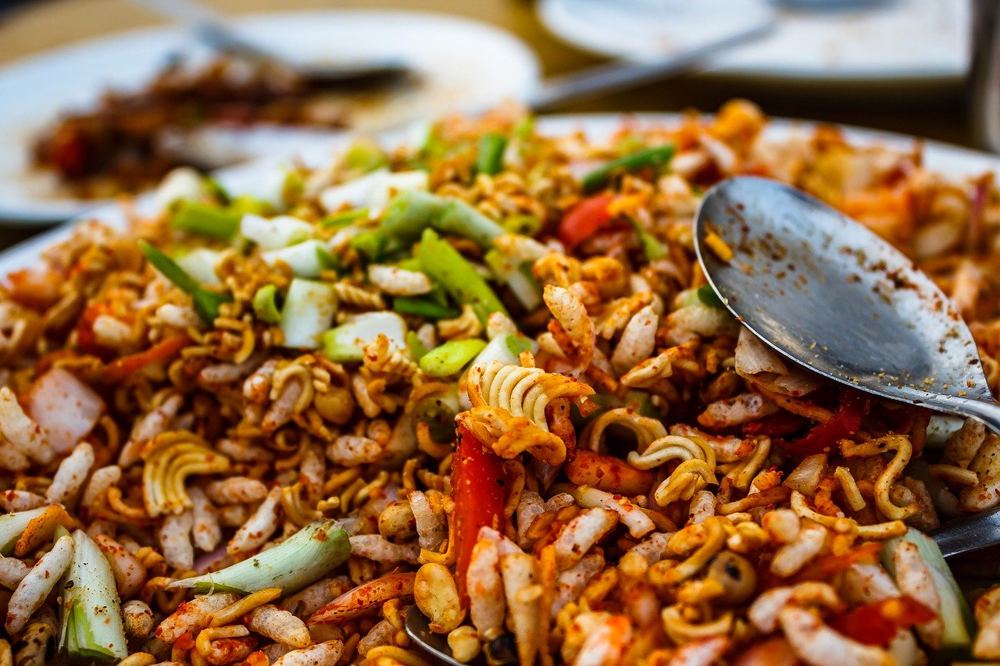

Chatpate recipe

Definition of Chatpapte
Muri, or Chatpate is popular street food in Nepal & India. It’s made using Puffed Rice (or Rice Crisps – easy to find online or on an Indian store).
It’s oil-free, full of veggies, light, spicy, and crunchy in texture.
Chatpate is so easy to put together. Just prepare the ingredients (mostly slicing/dicing/chopping the veggies), toss them in a large bowl, give them a quick mix, and you’re done!
Haha just joking!
Let's dive deep into the recipe.
Ingredients
- Puffed rice (Muri)-1 cup
- Chickpea (bhuteko kalo chana) -1/4 cup
- Peanuts with skin-1 /4 cup
- Coriander leaves chopped-1/4 cup
- Tomato chopped-1
- Cucumber cut into dice -1/2
- Daikon Radish- cut into dice- 1/2
- Carrot cut into dice- 1
- Onion chopped-1
- Lime juice- 2 teaspoons
- Cooking oil-1 teaspoon
- Chaat masala –Pinch (optional)
- Green chili- 2
- Red chili powder- just for color or as your taste
- Salt 1 tea spoon (or on your taste)
Video Courtesy: Anugraha's Kitchen by Uma
Methods
- In a big bowl put muri, salt, red chili powder and stir it well
- Close the bowl with a plate or a paper and shake the bowl badly
- Add cucumber, radish, peanuts, onion and tomato one at time, shake it well
- Also add chickpea coriander leaves and mix it well
- Add oil and lime juice
- Again close the bowl and shake it well
- Add chaat masala to add extra flavor, if desired
- Serve in a bowl or a cone made from newspaper
Back to Home